Grégory Charmier
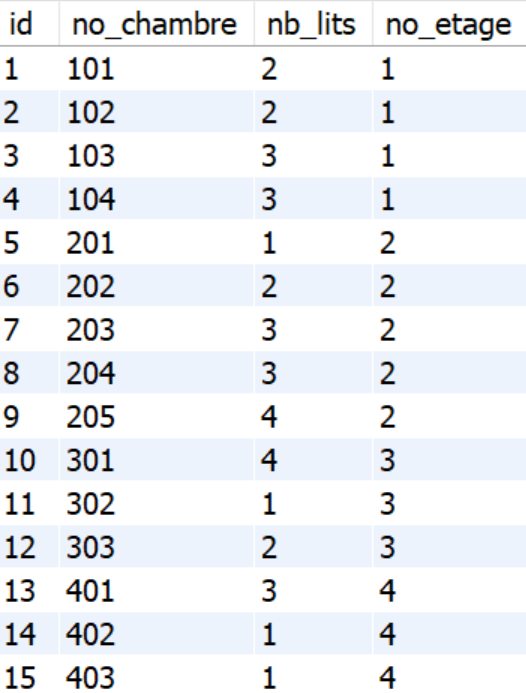
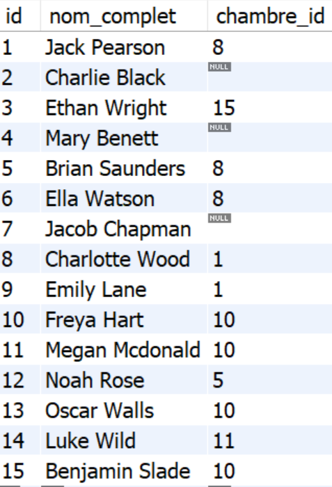
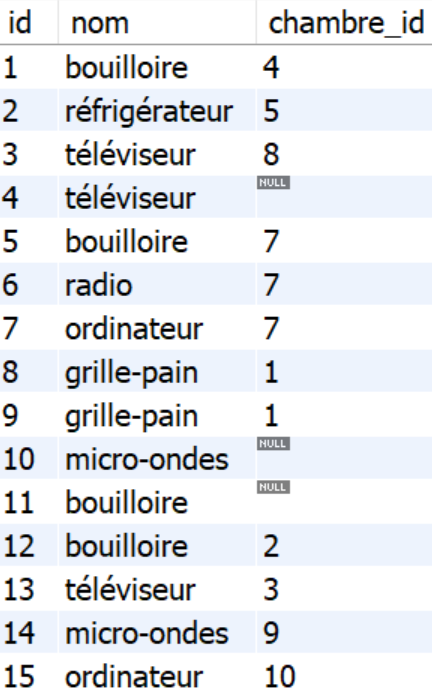
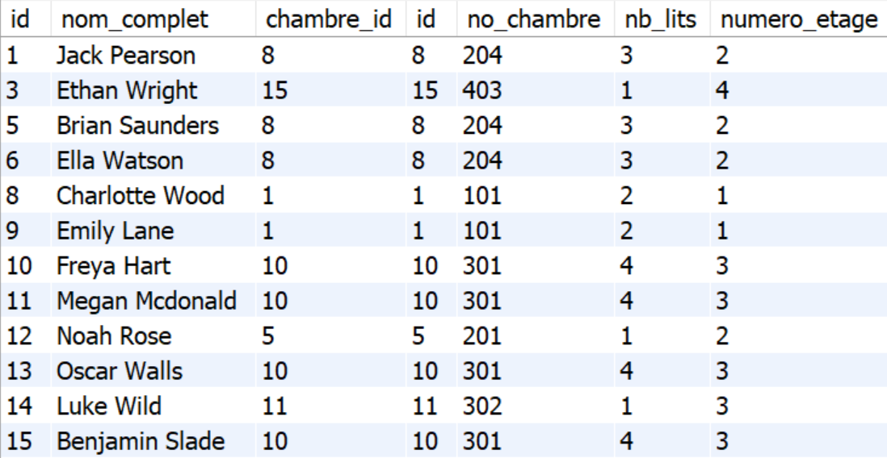
Maintenant, utilisez le nom complet INNER JOIN pour relier les tables chambre et equipement, de sorte que chaque équipement soit affiché avec sa chambre et d’autres colonnes pertinentes
Le résultat doit comporter les colonnes suivantes :
SELECT chambre.id, no_chambre, nb_lits,
no_etage, equipement.id, nom
FROM chambre
INNER JOIN equipement
ON equipement.chambre_id = chambre.id;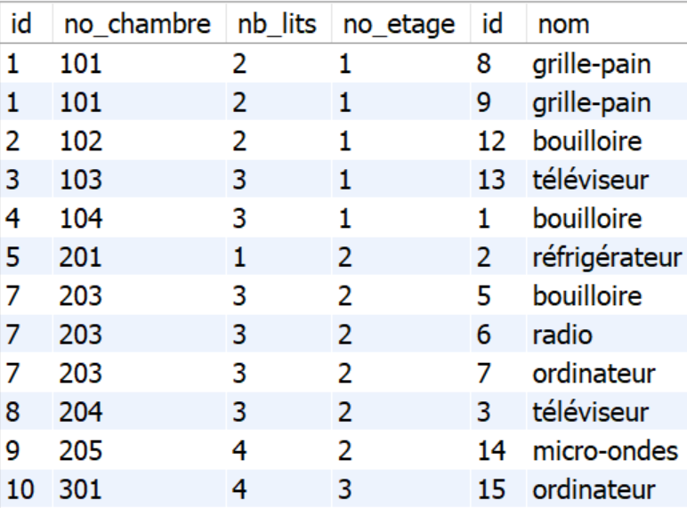
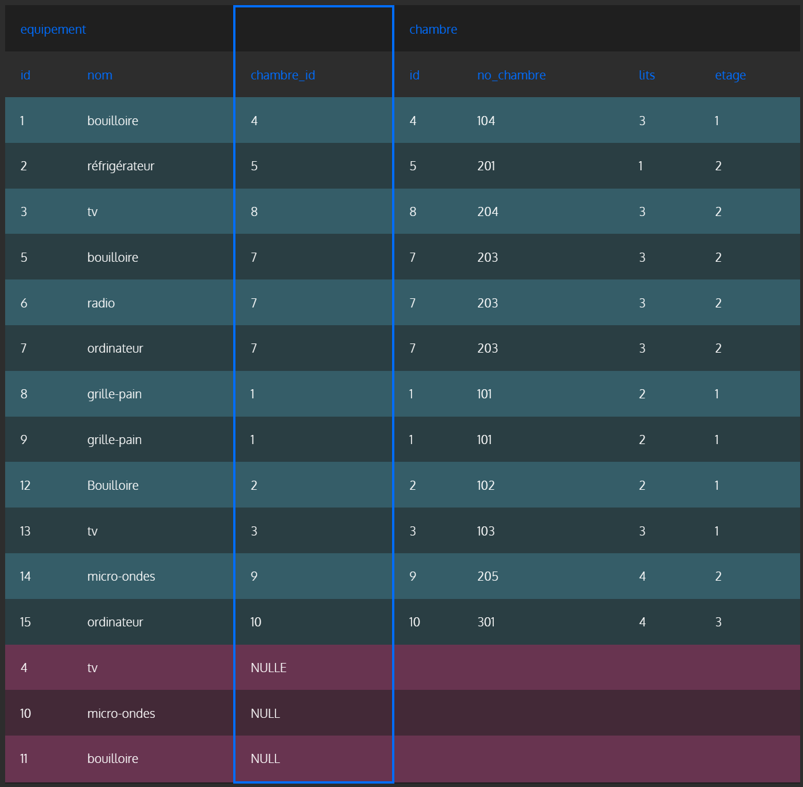
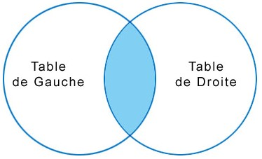
LEFT JOIN fonctionne de la manière suivante :
Imaginons 2 tables : Voiture et Personne
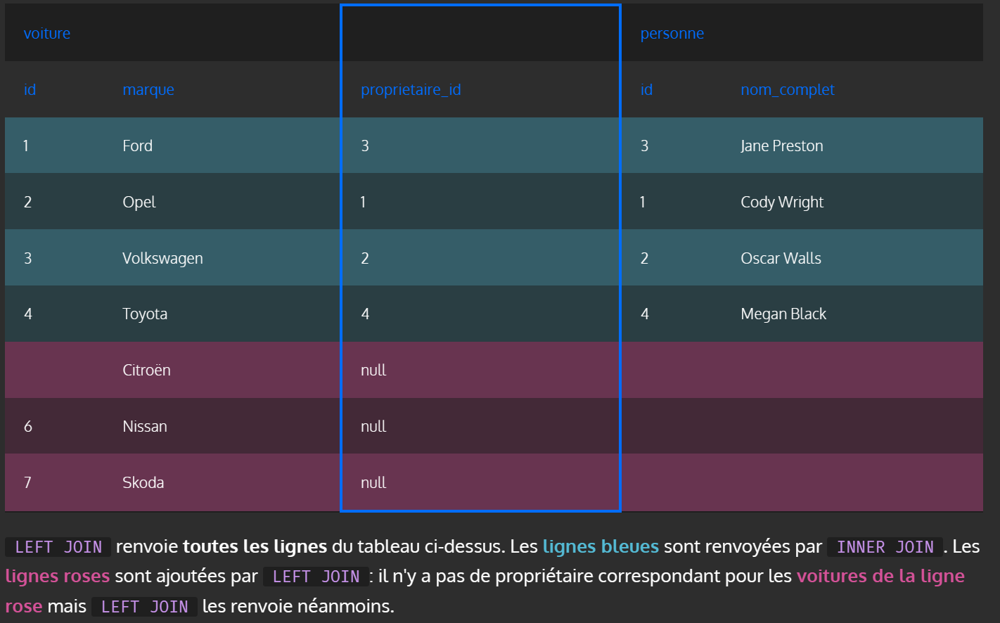
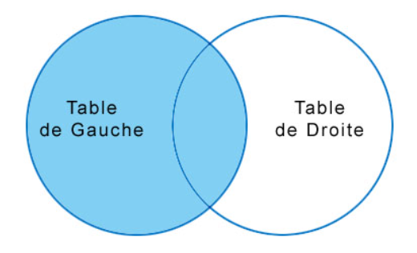
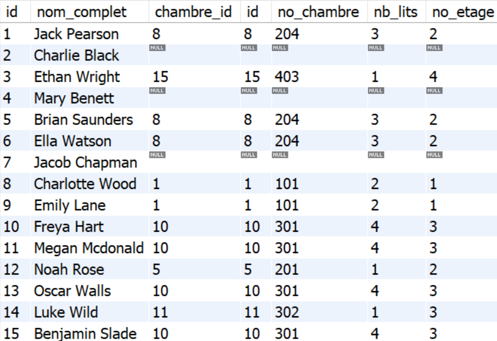
Le fonctionnement de RIGHT JOIN est le suivant :
Reprenons les 2 tables : Voiture et Personne
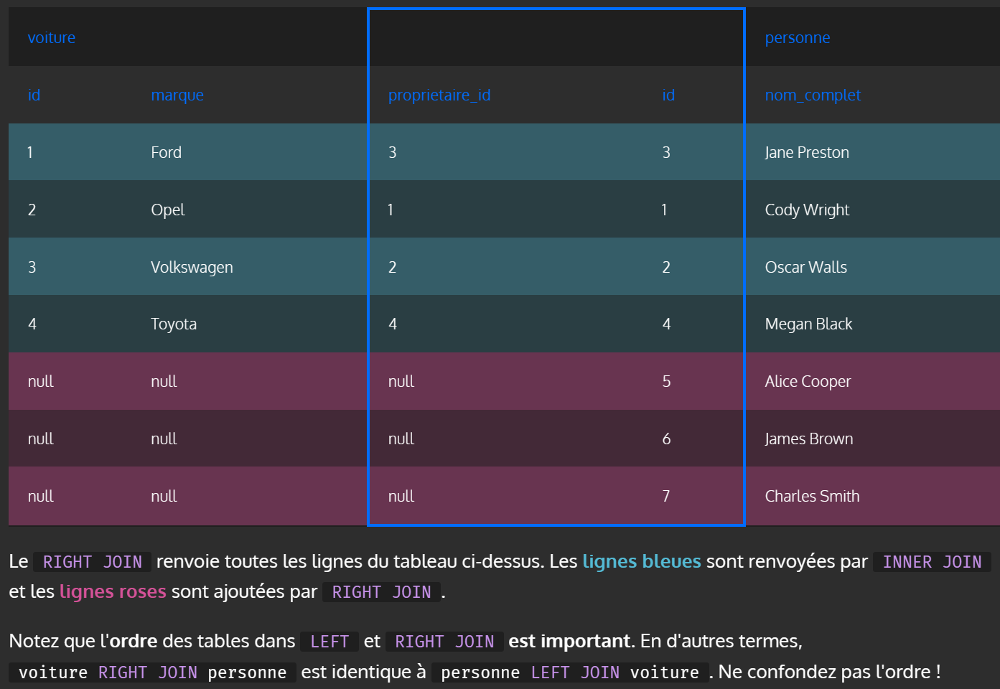
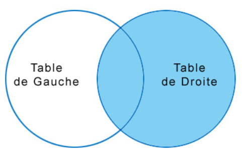
Le fonctionnement de FULL JOIN est le suivant :
Reprenons les 2 tables : Voiture et Personne
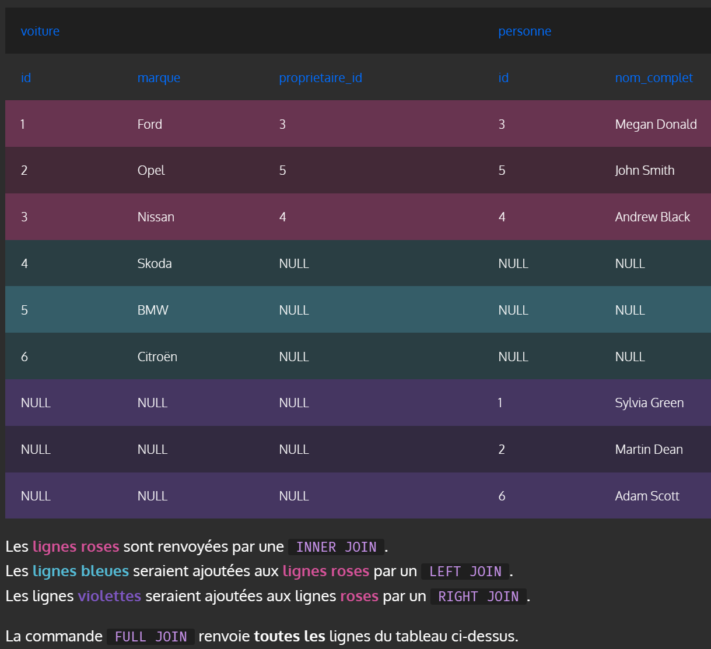
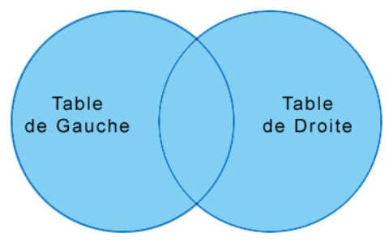
Comment fonctionne une jointure interne ?